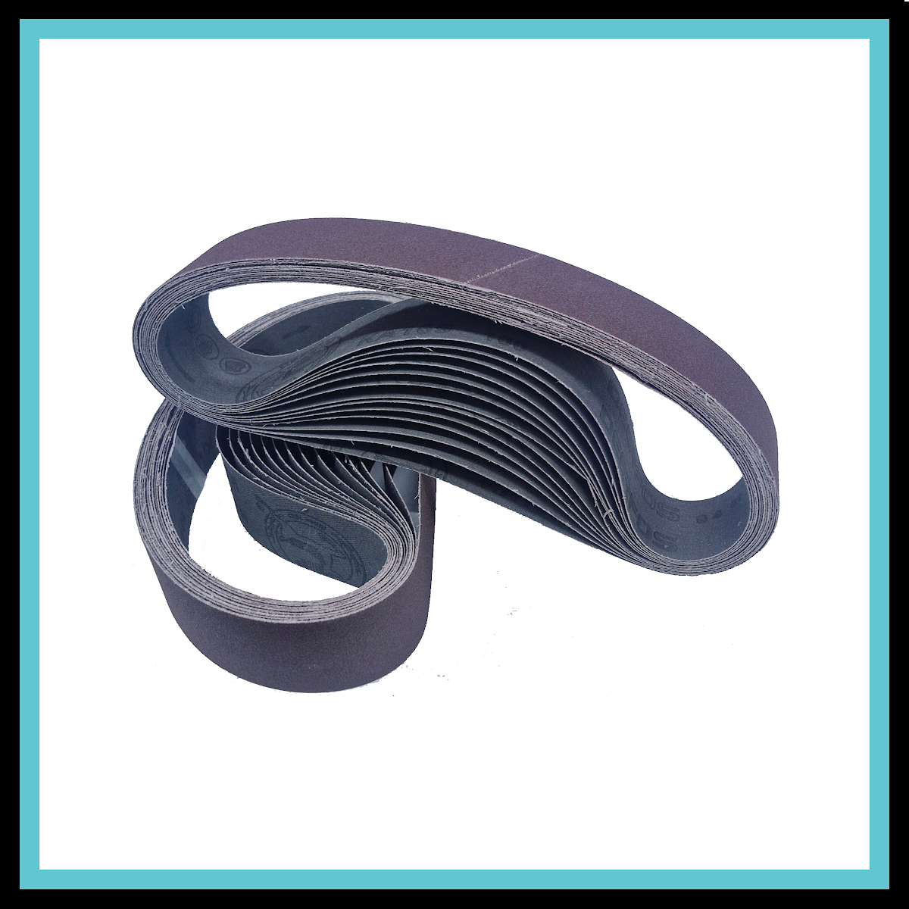

Se você trabalha com metalurgia, serralheria, marcenaria ou cutelaria, sabe que a escolha do abrasivo correto é o que define a linha entre um acabamento impecável e um retrabalho exaustivo. No mercado de usinagem, manutenção e acabamento, a cinta de lixa 686x50 mm (também conhecida comercialmente como 50x686 mm) se tornou um verdadeiro padrão de produtividade devido à sua compatibilidade com os motoesmeris com lixadeira mais populares do mercado.
Hoje, nós da Robusta Abrasivos trazemos para você um raio-X completo da nossa Cinta de Lixa de Óxido de Alumínio Premium, detalhando por que o nosso processo de fabricação e conversão própria entrega uma durabilidade muito superior às lixas comuns de mercado.
O diferencial da conversão Robusta Abrasivos
Muitos profissionais enfrentam o mesmo problema ao comprar cintas de lixa genéricas ou importadas sem padrão: a emenda se rompe facilmente ou é tão grossa que faz a máquina trepidar e marcar a peça que está sendo lixada.
Na Robusta Abrasivos, nós solucionamos isso através de um rigoroso processo de conversão industrial própria:
- Emenda técnica com fita Mylar interna: utilizamos uma fita especial de alta resistência (Mylar) aplicada exclusivamente na parte interna (costado) da lixa. O resultado é uma junção perfeitamente plana (flush), livre de ressaltos externos.
- Sem trepidações: ao passar pelos roletes da sua lixadeira, a lixa desliza com extrema suavidade, garantindo precisão milimétrica no seu desbaste ou polimento.
- Resistência à tração: o costado de tecido pesado suporta o torque de motores industriais e o lixamento sob alta pressão sem sofrer alongamento ou ruptura precoce.
Especificações técnicas da Cinta de Lixa Robusta
Desenvolvida para atuar com alta taxa de remoção de material e excelente acabamento, a nossa cinta possui características projetadas para o uso profissional e industrial:
- Marca/Conversão: Robusta Abrasivos
- Dimensões: 686x50 mm (perímetro de 0,68 metros e largura de 5 centímetros)
- Grão abrasivo: Óxido de Alumínio Premium (grão marrom de corte constante e uniforme)
- Costado: tecido de alta resistência com excelente flexibilidade mecânica (tipo X-Weight pesado)
- Tipo de cobertura: camada semiaberta (revestimento que cria pequenos canais de dispersão, evitando o acúmulo de poeira e o empastamento precoce do abrasivo)
- Regime de operação: lixamento a seco
Compatibilidade com máquinas do mercado
Nossa cinta de lixa de 686x50 mm é perfeitamente compatível com os principais modelos de moto esmeril com lixadeira de cinta do mercado brasileiro, incluindo:
- Moto Esmeril com Lixadeira de Cinta FORTGPRO (Modelo FG056) – 6 Pol. 375W
- Moto Esmeril com Lixadeira de Cinta Worker – 360W
- Moto Esmeril com Lixadeira de Cinta Lith – 6" 3450 RPM
- Qualquer lixadeira industrial de bancada ou cutelaria que utilize o padrão de circunferência de 686 mm por 50 mm de largura.
Melhores aplicações e indicações de uso
A versatilidade do Óxido de Alumínio Premium da nossa linha faz com que este kit de lixas seja indispensável para:
- Desbaste e acabamento em metais: perfeita para rebarbação de peças de ferro, aço, alumínio e ligas metálicas, além da remoção de soldas, tintas velhas e oxidações profundas.
- Preparação de superfícies de madeira: excelente para o nivelamento de painéis, vigas e chapas de madeira maciça, preparando a peça para o recebimento de seladoras ou vernizes.
- Processamento de plásticos e sintéticos: indicada para moldagem e remoção de rebarbas pesadas em acrílicos, PVC e polímeros industriais.
Como comprar e personalizar seu kit de grãos
Nós sabemos que no dia a dia da oficina ou indústria, você dificilmente precisará de apenas um tipo de grão para todo o processo. Para garantir que você tenha em mãos as lixas certas para as etapas de Desbaste, Semiacabamento e Acabamento, nós oferecemos total flexibilidade de personalização nas nossas lojas oficiais do Mercado Livre e Shopee.
Como fabricantes e conversores de abrasivos, temos a capacidade técnica de produzir cintas de lixa em qualquer tamanho, costado ou grão que sua empresa necessitar. Se a sua máquina utiliza uma medida fora do padrão de mercado ou se você precisa de outro tipo de abrasivo, como Zircônia ou Cerâmica, basta deixar uma pergunta em nossos anúncios para gerarmos um link personalizado para o seu projeto.
Força, precisão e durabilidade
Conversão própria e soluções sob medida para o seu trabalho.
Robusta Abrasivos.